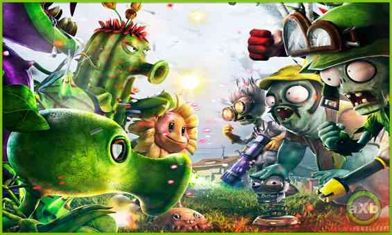

Plants vs Zombies: Garden Warfare 2 ofrece una amplia variedad de plantas y zombies para elegir, con variantes en cada uno. Esta guía lo guiará a través de todos los detalles que necesita saber para desbloquear los personajes y variantes que está buscando para jugar.
CÓMO GANAR PERSONAJES.
Tienes algunos métodos para ganar personajes, dependiendo de la cantidad de artículos consumibles que necesites para usar en la batalla. Todos estos se pueden comprar con la moneda del juego en la máquina expendedora, que se encuentra junto a la sala de héroes de Plantas y Zombis. Si no le preocupa obtener consumibles, la forma más infalible y rentable de ganar personajes es el paquete de personajes fenomenales por 75,000 monedas. Este paquete no contiene consumibles en absoluto, pero garantiza el desbloqueo de un personaje Raro o Super Raro. Si quieres una opción más barata que te proporcione consumibles y que eventualmente valga la pena con un personaje, obtén el Fertilizer Fun Pack o el Amazing Brainz Pack por 35.000 monedas. Aquellos ofrecen muchos artículos consumibles y una alta probabilidad (pero no una garantía) de una pieza de personaje. También puede obtener el Wondrous Pack of Greatness por 35,000, que tiene la mayor probabilidad de ser una pieza de personaje súper rara. Como lo indican los nombres, los paquetes Fertilizer Fun y Amazing Brainz se dividen entre las facciones Plant y Zombie, por lo que si estás buscando una pieza faltante en una facción u otra, este puede ser el camino a seguir. Sin embargo, dado que solo ofrece una pieza de personaje, se necesitarían cinco de ellas (un total de 175,000 monedas) para obtener la misma cantidad de valor de personaje que un paquete de personaje fenomenal. Eso significa que los consumibles y los elementos de personalización deberían valer 100,000 monedas, y las opciones más baratas son generalmente mejores para ellos.
PERSONAJES DE PLANTAS.
PERSONAJES DE ZOMBIES.